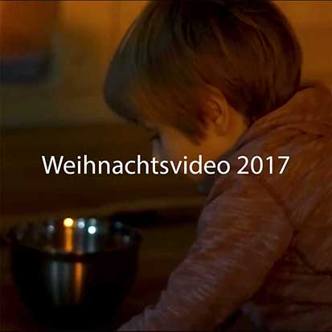
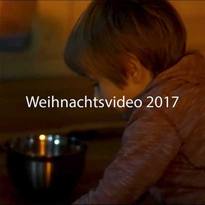
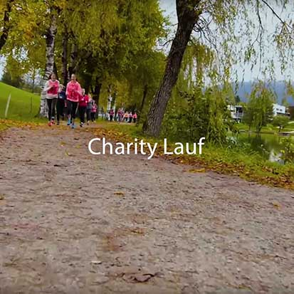
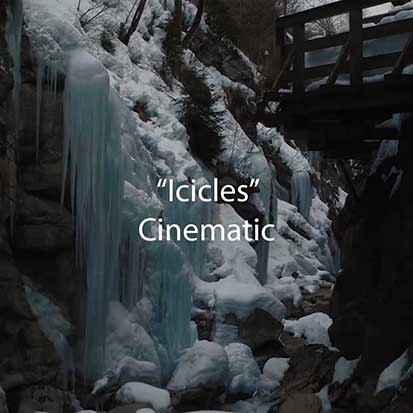
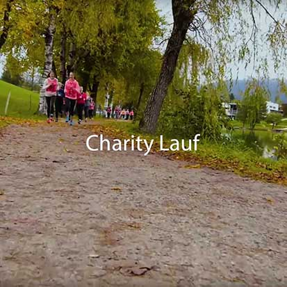
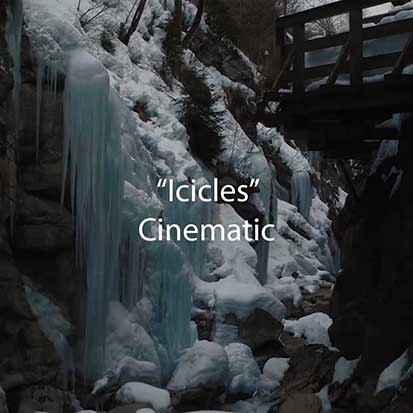

 



Über mich
Ich bin 17 Jahre jung und beschäftige mich schon seit fünf Jahren mit Videoproduktionen und Grafikdesign, da mich diese Bereiche schon sehr früh begeistert haben. Aktuell besuche ich die HBLW Saalfelden im Schulzweig Kommunikation & Mediendesign, in welchem das Filmen auch ein großer Schwerpunkt ist.
lucaspvisualdesign@gmail.com
+43 664 75041108